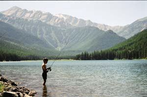

Fun & Food For Every Season
We enjoy the outdoors by gardening, foraging, hunting and fishing.
By Amy Grisak
April/May 2007
Nearly everything we do for fun involves gathering food. For my husband, Grant, my 13-year-old stepson, Blaine, and me, it’s just part of living in Montana. After all, how better to spend a summer day than to hike to a mountain lake, pick huckleberries along the way and take home trout for dinner?
I’m a freelance writer, and also occasionally do landscaping work - I especially like working with rock. Grant is a fisheries biologist for Montana Fish, Wildlife and Parks. We’ve been married three years now, and live in Kalispell, a town of about 15,000 people in the northwest part of the state.
When we’re at home, our lives revolve around what needs to be done in the garden, orchard and bee yard that day, and what wild foods can be found in the mountains. Each year, we grow or gather at least half of the food we eat. Every season brings something new, which varies our recreation and dinner planning.
Spring Fever in Montana
Early spring is the time to tend our old fruit trees. We have nine altogether: three plums, two pears, two apples, one crab apple and one pie cherry. When we bought this place three years ago, the 20-foot ‘Yellow Transparent’ apple tree hadn’t been touched for years. Now, when Grant prunes this veteran tree, it’s a spectator sport. He climbs as high as possible while straddling the trunk, and removes any wispy branches and limbs that are growing contrary to the pruning plan, which increases the yield of fruit.
Our vegetable garden is about 2,400 square feet. Technically, our growing season is Memorial Day to the middle of September, but I manage to add about 40 days to it with season-extending techniques. In spring, my perennial challenge is to coax the greens we planted late the previous summer to resume growing and produce fresh leaves.
After years of trial and error, I have found that if I use a floating row cover inside the cold frame, they kick into gear earlier. Now, we’re often enjoying tender, fresh salad greens by the end of March. Once winter begins to loosen its grip, I pull back a thick layer of insulating leaves and dig any carrots I left in the ground over the winter. Spending a winter in Mother Nature’s storage cellar makes them sugary sweet. It’s like finding buried treasure!
A Taste of Summer
By June, the garden is going gangbusters, and even with daylight lingering past 10 p.m., there never seems to be enough time to spend outdoors. I try to keep ahead of the weeds by hand-pulling them, then applying a thick layer of mulch between the narrow rows. My favorite type of mulch is old straw because it provides a thick, golden pathway that’s easy on my knees when I’m gardening. If barley or oat seeds germinate from the straw, they’re easy to pull and add to the mulch.
What we eat for dinner depends on what plants look best that day. I’m always delighted when the first basil is ready to pick, which in my eyes, is the official start of summer. There’s nothing tastier than homemade pasta topped with pesto and just-picked vegetables, particularly baby squash, which I pick as soon as they’re a couple inches long. Harvesting squash early is one way to keep ahead of the plants, before they start producing more than we can possibly eat.
Every day, Blaine inspects the strawberry bed to pick the sweet, ripe fruit before the birds find it. More than once we’ve been out-picked, so we make an effort to be faster than the feathered foragers. Next, it’s a contest to find the first ripe raspberries. Our raspberry patch produces in fits and spurts, but we enjoy wandering through it, picking and eating - so does Melvin, our blue heeler/Australian shepherd mix, who cleans the lower branches of any ripe berries.
When the snow melts in the mountains, it’s time to explore nearby streams and find cutthroat and rainbow trout waiting in the cold waters. We also go hiking, and keep an eye out for patches of huckleberries, a tart cousin of the blueberry. By August, they are usually ripe in the lower elevations, and we’ll go back and spend a few hours picking. The crop varies each year depending on the weather conditions, so we take advantage of the bountiful seasons. It takes a lot of picking to get a substantial amount of huckleberries, and in poor years it’s almost better to leave them for the bears.
Harvesting honey is another big summer event. Grant’s 10 hives produce more than 800 pounds a year, and it takes him several weeks to remove the supers and spin out the sweet treat. It’s sweltering, sticky work, but he loves sharing the process with others. We’ve even had a home-schooling group visit to study the social aspects of bees and how honey is harvested. We sell some of the honey by putting a sign out near the road.
Our summer finale is the county fair. Grant meticulously prepares his entries in the apiary division. He puts together the best colony representation for his observation hive, and carefully melts and strains beeswax until it looks like a brick of gold. I make lists of which herbs, vegetables and flowers might be ready to enter, and do any last minute canning. Then I spend all morning harvesting and preparing entries before we haul them to the fairgrounds. The next day is like Christmas morning. We rush over to see if our entries won, and begin planning our strategy for next year.
Fall Hunting & Harvesting
During the summer, the heat can make the landscape appear hazy and flat. But when the weather turns colder, everything is revived. Colors pop - the blue sky is crisper and the yellow and orange leaves are almost blinding. This is definitely the best time to be in the woods. I have two horses, Tiger and Kelo, but Kelo is my main mountain horse. He’s more like a mountain goat, and will go just about anywhere!
Grouse are common in this area, and when we ride by them on horseback, they tend to fly up and spook the horses. In September, it’s time to turn the tables and go hunting. In the evenings, we walk the trails or roads where we’ve seen them during the summer. Ruffed grouse are wary, making them more of a challenge to take, but Franklin’s grouse (also called spruce grouse) aren’t as flighty, probably why they have earned the nickname “fool’s hen.”
At the end of October we fill the freezer with venison. We harvest a doe or two at a friend’s farm where they battle whitetail deer in their gardens all summer. If one of us is lucky enough to draw a cow elk tag for the Missouri Breaks National Monument, we’ll spend a few days camping over on the east side of the mountains. It’s always an adventure; at that time of year it may be well below zero in the morning - cold enough for my contacts to freeze in their case.
By fall, the garden is wrapping up, and I gather the last potatoes, onions, squash, root vegetables and green tomatoes and store them in our insulated garage to enjoy over the winter.
Enjoying Icy Winters
Wintertime activities slow to suit the season. Our menu varies depending on what I have preserved through canning, drying or freezing. Some of my kitchen experiments are well-received, such as huckleberry jam or applesauce made with honey. Others, such as my pickled crab apples, tend to come out only when we’re searching for something different. Winter is the perfect time for me to try new recipes, and I spend a lot of time in the kitchen.
Once the ice on the lakes is thick enough to walk on - about 4 to 6 inches to support an adult - we load the icehouse in the back of the truck, and head out for a day of catching perch or pike. When Grant first built the “perch palace,” I was a bit skeptical. It’s an ominous-looking, black-painted wooden box that is 4 feet on each side, with a door on one side and small sliding window on the other. But once inside, it’s lovely. The holes we drill through the ice are completely illuminated by the sun, and it’s a treat to watch the fish come in to take the bait. Grant rigs up a small propane heater to keep us toasty warm.
Whether it’s wild food we’ve hunted or gathered, or fruits and vegetables we’ve grown ourselves, we enjoy eating what we harvest. No two winters, or summers, are ever quite alike, so every experience is fresh. Then the seasons change, and there’s always something new right around the corner.
|
GRANT GRISAK Amy makes the most of Montana’s short gardening season. |
 GRANT GRISAK Blaine fishes for trout. |
AMY GRISAK Making applesauce with fruit fresh from the tree. |
|
GRANT GRISAK Amy carries an elk quarter home from the field. |
AMY GRISAK Beans grow on a homemade trellis. |
AMY GRISAK Picking huckleberries. |
|
AMY GRISAK Blaine helps harvest honey. |
AMY GRISAK The bee hives, placed near the fruit trees, buzz with activity. |
 AMY GRISAK With 10 hives, there’s plenty of honey to enjoy, and also to sell. |
|
GRANT GRISAK Amy shows off the perch she caught while ice fishing. |
AMY GRISAK Grant enjoys a spectacular view. |
|